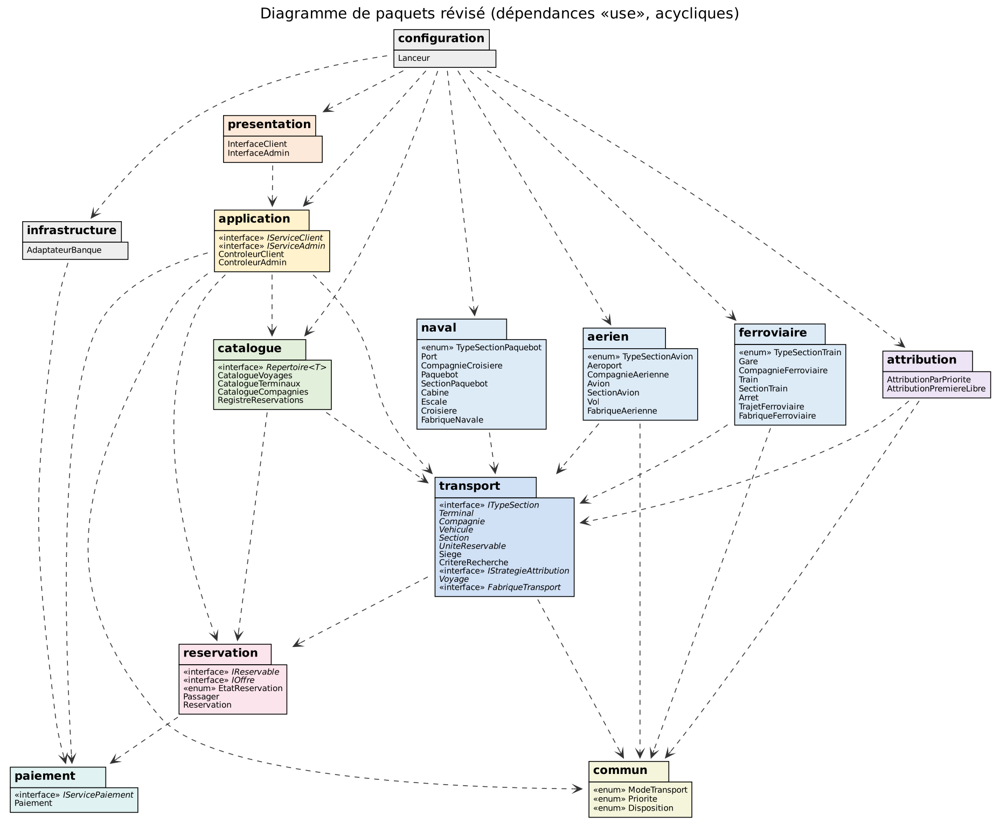

Rapport
IFT 3911 – Devoir 2 – Modélisation et analyse
| Nom | Matricule (4 derniers chiffres) | Courriel | Temps consacré au devoir |
|---|---|---|---|
| Toky Erick Rabenantoandro | 6409 | toky.erick.rabenantoandro@umontreal.ca | 12 h |
| Gabriel Barroso Magno Viana | 3304 | gabriel.barroso.magno.viana@umontreal.ca | 20 h |
| Jad Idrissi | 8693 | jad.idrissi@umontreal.ca | 16 h |
Dépôt GitHub : https://github.com/frdyykksch/ift3700-1
Fichiers remis
Le fichier rapport.html se trouve à la racine
de l'archive ZIP. Le dépôt est organisé comme suit :
rapport.htm
Design/
projet.vpp projet Visual Paradigm du design révisé (6 diagrammes)
Classes - noyau.png diagramme de classes (export Visual Paradigm)
Classes - modes de transport.png diagramme de classes (export Visual Paradigm)
Diagramme de paquets.png diagramme de paquets (export Visual Paradigm)
DS - Verifier les voyages.png diagrammes de séquence (export Visual Paradigm)
DS - Reserver une unite.png
DS - Payer une reservation.png
code_java/ squelettes Java du design (source de l'Instant Reverse de Visual Paradigm)
sequences/ sources texte des diagrammes de séquence importés dans Visual Paradigm
diagrammes/ vues détaillées complémentaires et métriques
classes-noyau.png diagramme de classes logiciel (noyau)
classes-modes.png diagramme de classes logiciel (modes de transport)
paquets.png diagramme de paquets avec les classes de chaque paquet
DSVerifierLesVoyages.png
DSReserverUneUnite.png
DSPayerUneReservation.png
graphe-IA.png graphe instabilité–abstraction
metriques.json Ca, Ce, I, A, D par paquet et fardeau de chaque classe
Réseau de Petri/
reseau-tunnel.xml
reseau-tunnel.png
graphe-couverture.png
Statechart/
Microwave/
model/
microwave.sct
java.sgen
image.sgen
src/
images/
microwave_complet.png
microwave.png
porte.png
Hypothèses générales
Hypothèses concernant le réseau de Pétri
- Le flux est continu : une voiture attend en tout temps à chaque entrée du tunnel.
- Une voiture quitte le système dès qu'elle sort du tunnel ; aucune place ne représente les voitures arrivées.
- Un feu est vert lorsque sa place contient un jeton, et rouge sinon. Pendant une traversée, les deux feux sont rouges.
- Au départ, le tunnel est vide et le feu côté Montréal est vert. Ce choix est arbitraire : l'autre choix produit le même cycle.
Hypothèses concernant le micro-ondes
- Le four démarre au repos, avec la porte fermée.
-
La puissance doit être sélectionnée avant
la saisie du temps.
La puissance forte correspond à
power = 1, tandis que la puissance faible correspond àpower = 2. - Le temps saisi comporte au maximum quatre chiffres et représente une durée en secondes.
- Une durée nulle ne permet pas de démarrer la cuisson.
- L'ouverture et la fermeture de la porte ne déclenchent jamais automatiquement la cuisson.
-
L'événement
stopinterrompt le processus sans modifier physiquement l'état de la porte.
Hypothèses concernant le système de réservation (design révisé)
- Les hypothèses du DM1 restent valides : allers simples, une réservation porte sur une seule unité d'un seul voyage, paiement par un service bancaire externe qui accepte ou refuse la transaction.
- Une réservation non payée après 24 h passe à l'état
Expiree;RegistreReservations.expirerReservations(maintenant)applique cette règle et l'unité redevient libre. - Les codes des terminaux (aéroports, gares, ports) sont uniques entre tous les terminaux.
DateHeureetDatesont des types de fondation ordonnés (<, <=) ;DateHeureoffreplusJours(n : Integer) : DateHeure.- Le client choisit le mode de transport lors de la recherche. Pour une croisière, il ne donne pas de destination (le port de départ est aussi le port d'arrivée).
- Le prix d'une unité est
pleinTarifde la compagnie × coefficient du type de section ; il n'est pas stocké. - Les opérations de l'administrateur (créer, modifier, supprimer compagnies, terminaux, véhicules, voyages,
assigner un prix) sont représentées par
IServiceAdmin; seules les trois opérations du client ont un diagramme de séquence, comme au DM1.
1. Réseau de Pétri – Tunnel
Responsable : Toky Erick Rabenantoandro
1.1 Modélisation
Le réseau est construit dans PIPE selon les trois incréments de l'énoncé. Tous les arcs ont un poids de 1. Le marquage est noté M = [VM, VR, L, TR, TM, FM, FR] :
- VM, VR : Voiture en attente MTL, Voiture en attente RS ;
- L : Tunnel Libre ;
- TR, TM : Dans tunnel vers RS, Dans tunnel vers MTL ;
- FM, FR : Feu MTL, Feu RS (feu vert si la place contient un jeton).
Marquage initial : M0 = [1, 1, 1, 0, 0, 1, 0].
| Transition | Consomme | Produit |
|---|---|---|
| Entrer depuis Montréal (EM) | VM, L, FM | VM, TR |
| Sortir vers Rive Sud (SR) | TR | L, FR |
| Entrer depuis Rive Sud (ER) | VR, L, FR | VR, TM |
| Sortir vers Montréal (SM) | TM | L, FM |
Incrément 1 — deux voies, flux continu
Places VM, VR, TR, TM et les quatre transitions. Chaque place d'entrée est reliée à sa transition par deux arcs : le jeton est consommé (la voiture entre) puis restitué (la voiture suivante arrive). VM et VR restent donc à 1, ce qui modélise le flux continu. La voiture qui sort quitte le système.
Incrément 2 — une seule voiture à la fois
La place L (un jeton) est consommée par chaque entrée et rendue par chaque sortie : c'est l'exclusion mutuelle du sémaphore vu en cours.
Incrément 3 — feux alternés
Une entrée consomme le feu vert de son côté ; la sortie correspondante donne le vert au côté opposé. Pendant une traversée, les deux feux sont rouges.

1.2 Lois de conservation et sécurité
Matrice d'incidence C = Post − Pré du modèle final :
| Place | EM | SR | ER | SM |
|---|---|---|---|---|
| VM | 0 | 0 | 0 | 0 |
| VR | 0 | 0 | 0 | 0 |
| L | −1 | +1 | −1 | +1 |
| TR | +1 | −1 | 0 | 0 |
| TM | 0 | 0 | +1 | −1 |
| FM | −1 | 0 | 0 | +1 |
| FR | 0 | +1 | −1 | 0 |
Une loi de conservation est un vecteur γ tel que γ · C = 0 ; alors γ · M = γ · M0 pour tout marquage accessible M. Une équation par transition :
EM : −γ(L) + γ(TR) − γ(FM) = 0 SR : γ(L) − γ(TR) + γ(FR) = 0 ER : −γ(L) + γ(TM) − γ(FR) = 0 SM : γ(L) − γ(TM) + γ(FM) = 0 ⇒ γ(FM) = γ(FR) = a et γ(TR) = γ(TM) = γ(L) + a ; γ(VM) et γ(VR) sont libres.
On obtient quatre lois indépendantes, évaluées en M0 :
- L1 (γ(L) = 1, a = 0) : M(L) + M(TR) + M(TM) = 1 + 0 + 0 = 1 ;
- L2 (γ(L) = 0, a = 1) : M(TR) + M(TM) + M(FM) + M(FR) = 0 + 0 + 1 + 0 = 1 ;
- L3 : M(VM) = 1 ; L4 : M(VR) = 1.
Une seule voiture dans le tunnel. Par L1, M(TR) + M(TM) = 1 − M(L). Comme M(L) ≥ 0, M(TR) + M(TM) ≤ 1 : au plus une voiture est dans le tunnel, dans un sens ou dans l'autre. ∎
L2 montre que les feux suffisent à eux seuls : une voiture dans le tunnel implique deux feux rouges. Les lois L1 à L4 couvrent toutes les places avec des poids positifs : le réseau est conservatif, donc borné, et sauf (au plus un jeton par place).
1.3 Graphe de couverture, équité et absence de famine

| Marquage | Vecteur | Situation | Seule transition franchissable |
|---|---|---|---|
| M0 | [1, 1, 1, 0, 0, 1, 0] | tunnel libre, feu vert à Montréal | EM |
| M1 | [1, 1, 0, 1, 0, 0, 0] | voiture vers la Rive Sud, deux feux rouges | SR |
| M2 | [1, 1, 1, 0, 0, 0, 1] | tunnel libre, feu vert à la Rive Sud | ER |
| M3 | [1, 1, 0, 0, 1, 0, 0] | voiture vers Montréal, deux feux rouges | SM |
Aucun marquage ne domine un de ses ancêtres : aucun ω. Le retour à M0 est un duplicata qui termine la construction. Le réseau est borné et sauf ; son graphe de couverture est son graphe d'accessibilité.
Équité. Chaque marquage a un seul successeur : le graphe est le cycle M0 → M1 → M2 → M3 → M0. EM et ER ne sont jamais franchissables en même temps : elles ne sont jamais en conflit. Toute séquence est un préfixe de (EM, SR, ER, SM)ω, donc |#EM − #ER| ≤ 1 : les entrées alternent et le système est équitable de part et d'autre du tunnel. ∎
Absence de famine. On en déduit :
- pas d'interblocage : chaque marquage a un successeur ;
- les quatre transitions sont sur le cycle, donc L4-vivantes : le réseau est vivant ;
- attente bornée : par L3 et L4, une voiture attend toujours de chaque côté, et elle entre après au plus trois franchissements, soit le passage d'une seule voiture d'en face.
Aucune voie ne peut se voir refuser le tunnel indéfiniment : il n'y a pas de famine. ∎
Fichiers : reseau-tunnel.xml, reseau-tunnel.png, graphe-couverture.png
2. Statechart – Four à micro-ondes
Responsable : Gabriel Barroso Magno Viana
2.1 Présentation générale du modèle
Le comportement du four à micro-ondes est modélisé à l'aide d'un Statechart réalisé dans itemis CREATE, à partir du modèle initial fourni dans l'énoncé.
Le modèle est organisé en deux régions orthogonales :
Microwave et Porte.
La première région est responsable du fonctionnement du micro-ondes, notamment la sélection de puissance, la saisie du temps, la cuisson et sa finalisation. La seconde région contrôle l'ouverture et la fermeture de la porte.
L'utilisation de régions orthogonales permet de représenter simultanément deux aspects indépendants du système.
Ainsi, le micro-ondes peut se trouver
dans un état de fonctionnement,
comme Addtime ou Waiting,
tout en ayant la porte ouverte ou fermée.
Cette approche évite de multiplier les états pour représenter toutes les combinaisons possibles entre le fonctionnement du micro-ondes et la position de la porte.

2.2 Région Microwave

2.2.1 Sélection de la puissance
Le système commence dans l'état Repos.
Dans cet état, l'afficheur est initialisé
par l'opération clearDisplay().
Les événements high et low
permettent de sélectionner respectivement
une puissance forte ou faible.
Le système peut également passer d'une puissance à l'autre avant la configuration du temps de cuisson.
Lors de l'entrée dans l'état High,
la variable power reçoit la valeur 1
et le message « High » est affiché.
Dans l'état Low,
la variable reçoit la valeur 2
et le message « Low » est affiché.
2.2.2 Saisie du temps
L'événement timer permet de passer
de l'état de sélection de puissance
à l'état Addtime.
Cet état permet de saisir une durée
de quatre chiffres au maximum.
Deux variables internes sont utilisées :
remainingTime,
qui contient la durée saisie en secondes,
et digitCount,
qui représente le nombre de chiffres introduits.
Une réaction locale associée à l'événement
digit permet de mettre à jour
le temps sans quitter l'état Addtime.
La garde digitCount < 4
empêche l'introduction de chiffres supplémentaires
après les quatre premiers.
digit [digitCount < 4] /
remainingTime = remainingTime * 10 + valueof(digit);
digitCount += 1;
displayTime((remainingTime / 60) * 100 + remainingTime % 60)
La conversion utilisée pour
displayTime()
permet de représenter le temps
sous la forme minutes:secondes,
tout en conservant la durée réelle
en secondes dans remainingTime.
2.2.3 Cuisson et compte à rebours
La transition vers l'état Cooking
nécessite l'événement start
et le respect de deux conditions :
la durée doit être positive
et la porte doit être fermée.
start [remainingTime > 0 && doorOpen == false]
À l'entrée dans Cooking,
l'opération cook() démarre la cuisson
et le temps restant est affiché.
Le compte à rebours est modélisé
par une réaction temporelle
every 1 s.
Elle diminue la variable
remainingTime
d'une unité toutes les secondes,
tant que sa valeur est supérieure à 1.
every 1 s [remainingTime > 1] /
remainingTime -= 1;
displayTime((remainingTime / 60) * 100 + remainingTime % 60)
Lorsque le temps restant est égal à une seconde,
une transition temporelle vers
Finishingcooking
permet de terminer le processus.
every 1 s [remainingTime == 1] /
remainingTime = 0
L'action de sortie stopCook()
assure l'interruption de la cuisson
lorsque l'état Cooking est quitté.
2.3 Région Porte

La région Porte
comporte deux états :
Closing et Opening.
L'état initial est Closing,
qui représente une porte fermée.
Les événements open et
close permettent de passer
d'un état à l'autre.
La variable interne booléenne
doorOpen
mémorise la position de la porte.
Lors de l'entrée dans Opening,
cette variable devient true
et l'opération openDoor()
est exécutée.
À l'inverse, l'entrée dans
Closing
met doorOpen à
false
et exécute closeDoor().
Cette variable est consultée dans les gardes de la région principale afin d'empêcher la cuisson lorsque la porte est ouverte.
2.4 Interruption et reprise de la cuisson
Lorsqu'un événement open
survient pendant la cuisson,
le système passe de Cooking
à Waiting.
La sortie de l'état Cooking
provoque l'exécution de stopCook(),
interrompant immédiatement le processus de cuisson.
Le temps restant est conservé
dans la variable remainingTime.
Il n'est donc pas nécessaire
de recommencer la configuration du temporisateur.
À l'entrée dans Waiting,
le message « Waiting » est affiché.
Si la porte est refermée,
une réaction locale associée à close
permet de restaurer le temps restant
sur l'afficheur.
Une nouvelle ouverture de la porte dans cet état affiche à nouveau le message « Waiting ».
La fermeture de la porte
ne déclenche pas automatiquement la reprise.
L'utilisateur doit appuyer
à nouveau sur start.
La transition vers Cooking
est alors autorisée uniquement
si la porte est fermée
et si le temps restant est positif.
start [doorOpen == false && remainingTime > 0]
Cette solution permet d'assurer la sécurité du système et la conservation des informations nécessaires à la reprise de la cuisson.
2.5 Fin de la cuisson
Lorsque le compte à rebours arrive à son terme,
le système entre dans l'état composite
Finishingcooking.
L'entrée dans cet état affiche le message « Finished ».
Deux sous-états,
BeepOn et BeepOff,
assurent la signalisation sonore
et le clignotement de l'afficheur.
Les deux états alternent
à intervalles de 500 millisecondes,
grâce à des transitions temporelles
after 500 ms.
Une transition after 5 s,
définie au niveau de l'état composite,
met fin à cette signalisation
et ramène le micro-ondes
à l'état Repos.
L'action de sortie beepOff()
permet d'interrompre la signalisation
au moment de quitter Finishingcooking.
2.6 Arrêt du système
L'événement stop
permet d'interrompre le fonctionnement
du micro-ondes et de revenir
à l'état Repos.
Cette possibilité est prévue depuis les différents états du processus, notamment la sélection de puissance, la saisie du temps, la cuisson, l'attente et la signalisation de fin.
Lors de l'arrêt, les actions de sortie des états concernés garantissent l'interruption de la cuisson ou de la signalisation.
La région de la porte reste indépendante :
l'utilisation de stop
ne provoque pas automatiquement
la fermeture de la porte.
2.7 Fichiers du projet
Fichier source principal : Statechart/Microwave/model/microwave.sct
Le dossier Statechart/Microwave/
contient les fichiers du projet itemis CREATE
utilisé pour la modélisation du système.
2.8 Génération du code et vérification
3. Design logiciel – Révision du devoir 1
Le système de réservation de voyages développé dans le devoir maison 1 est révisé afin d'améliorer sa modularité, sa réutilisabilité et la répartition des responsabilités.
3.0 Corrections apportées à la suite de la correction du DM1
| Commentaire du correcteur | Correction dans le DM2 |
|---|---|
| Compagnies, véhicules, voyages et sections non reliés entre eux : une ligne de train pourrait offrir un vol avec un paquebot. | Associations typées dans chaque mode : CompagnieAerienne ◆— Avion, CompagnieAerienne — Vol, Vol → Avion,
et de même pour le train et le paquebot. Les classes abstraites n'exposent que getCompagnie() et getVehicule() (abstraites).
Des invariants OCL vérifient le type des sections (§ 3.4). |
| Pas de volet administrateur ; pas de classe servant de point d'entrée / interface. | Paquet presentation (InterfaceClient, InterfaceAdmin) et interfaces
IServiceClient / IServiceAdmin, réalisées par ControleurClient et ControleurAdmin.
L'administrateur crée les objets d'un mode par une FabriqueTransport. |
Getters et setters inutiles ; getDebut(), getFin() et estOccupe() superflus. |
Retirés. Voyage a les attributs depart et arrivee de type DateHeure.
La disponibilité vient de Reservation.estActive(maintenant), calculée à partir de l'état. |
TypeSection n'a pas besoin d'être une classe ; utiliser des énumérations. |
Trois énumérations TypeSectionAvion, TypeSectionTrain et TypeSectionPaquebot réalisent
l'interface ITypeSection (code et coefficient). Seul TypeSectionPaquebot a une capacité. |
Classe CarteCredit pas nécessaire. |
Supprimée. Le numéro et l'expiration passent directement au service de paiement et ne sont pas conservés. |
Le client ne précise pas le mode de transport ; entrée différente pour un paquebot ; explication de correspond() peu claire. |
verifierVoyages(mode, origine, destination, date, typeSection). La destination est omise pour une croisière
(fragment opt). Le comportement de correspond() est décrit pour chaque sous-classe (§ 3.2). |
Noms Itineraire et Trajet vagues. |
Renommés Croisiere et TrajetFerroviaire ; LigneTrain devient CompagnieFerroviaire. |
| Diagramme de paquets : préciser les classes des paquets. | Chaque paquet affiche ses classes (§ 3.3). |
OCL : langage naturel, associations inexistantes, post et non pos, connecteurs and,
préconditions incomplètes, contrainte hors énoncé. |
Toutes les contraintes sont réécrites avec leur énoncé en langage naturel et n'utilisent que des rôles présents dans le diagramme (§ 3.4). La contrainte « un passeport par voyage », absente de l'énoncé, est retirée. |
| Justifications : plus de références au couplage, à la cohésion et à GRASP. | Section 4 au complet. |
3.1 Diagramme de classes logiciel révisé
Pour rester lisible, le diagramme est présenté en deux vues du même modèle : le noyau, puis les spécialisations par
mode de transport. Dans la seconde vue, les classes grises appartiennent au paquet transport.


Vues détaillées complémentaires, avec les compositions, les multiplicités et les signatures complètes : Design/diagrammes/classes-noyau.png et Design/diagrammes/classes-modes.png.


Principales modifications
| Élément | DM1 | DM2 | Raison |
|---|---|---|---|
| Point d'entrée | Aucun ; le client appelait directement ControleurClient. |
InterfaceClient / InterfaceAdmin dépendent de IServiceClient / IServiceAdmin. |
Contrôleur (GRASP), DIP, ISP : chaque acteur ne voit que ses opérations. |
| Administration | Absente. | ControleurAdmin + FabriqueTransport (fabrique abstraite) et trois fabriques concrètes. |
OCP : ajouter un mode ne modifie pas le contrôleur. La fabrique concrète est choisie dans une table indexée par ModeTransport, sans switch. |
| Recherche des réservations | CatalogueVoyages parcourait tous les voyages et leurs réservations. |
RegistreReservations (fabrication pure) indexe les réservations par numéro et gère l'expiration. |
SRP, forte cohésion : le catalogue ne gère plus que les voyages. |
| Choix de l'unité | Méthode privée trouverUniteLibre(…, priorite) dans Voyage. |
Interface IStrategieAttribution ; AttributionParPriorite (fenêtre/allée) et AttributionPremiereLibre (cabines). |
Patron Stratégie, polymorphisme, CRP : la règle varie sans sous-classer Voyage. |
| Paramètres de recherche | Cinq paramètres passés en cascade. | Objet valeur CritereRecherche passé à correspond(c). |
Une seule signature polymorphe pour les trois modes. |
| Réservation | Liée à Voyage et UniteReservable (classes de transport) ; confirmer avait 5 paramètres, dont une carte. |
Liée aux interfaces IOffre et IReservable ; confirmer(passager, paiement). |
DIP : le paquet reservation ne connaît plus le transport et devient réutilisable. |
| Service de paiement | IServicePaiement sans implémentation. |
AdaptateurBanque dans infrastructure réalise IServicePaiement. |
Patron Adaptateur, variations protégées. |
| Sections | Section concrète ; dispositionSiege : String et aile : Set<Integer>. |
Section abstraite ; énumération Disposition (S, C, M, L) qui connaît ses colonnes et ses ailes. |
Évite la cohésion d'instance mixte : une section de paquebot n'a pas de disposition. |
| Assemblage | Non représenté. | Lanceur (paquet configuration) instancie les classes concrètes et les injecte. |
DIP : seule cette classe dépend des classes concrètes. |
Responsabilités des classes
| Classe | Responsabilité |
|---|---|
ControleurClient | Reçoit verifierVoyages, reserver, payer ; coordonne les catalogues, le registre et le service de paiement sans faire le travail lui-même. |
ControleurAdmin | Reçoit les opérations de l'administrateur ; délègue la création à la fabrique du mode et l'enregistrement aux catalogues. |
Repertoire<T> | Interface générique ajouter / retirer / trouver par identifiant, réalisée par les trois catalogues et le registre. |
Voyage | Expert des unités libres et du prix ; créateur des réservations (il les agrège). reserver() est une méthode patron (Template Method) qui appelle getVehicule(), abstraite. |
Vol, TrajetFerroviaire, Croisiere | Redéfinissent correspond(c) ; connaissent leur compagnie, leur véhicule et leurs terminaux. |
Compagnie | Expert du prix : getPrix(t) = pleinTarif × t.getCoefficient(). |
Reservation | Expert de son état et de son expiration ; enregistre le passager et le paiement lors de la confirmation. |
FabriqueAerienne, … | Créent des objets cohérents d'un même mode (compagnie, avion, sections, sièges, vol). |
3.2 Révision des diagrammes de séquence
Responsable : Gabriel Barroso Magno Viana
Lors de la correction du devoir maison 1, les diagrammes de séquence ont obtenu une note de 14/15. Les scénarios « Réserver une unité » et « Payer une réservation » ont été jugés corrects. Les modifications ont donc principalement porté sur le diagramme « Vérifier les voyages », afin de répondre aux commentaires du correcteur.
3.2.1 Vérifier les voyages disponibles
Les modifications suivantes ont été apportées :
-
Ajout du mode de transport :
le paramètre
modeTransporta été ajouté à l'opérationverifierVoyages(), permettant à l'utilisateur de préciser le mode de transport recherché. Ce paramètre est également transmis auCatalogueVoyages. -
Clarification de l'acteur :
l'acteur
Clienta été renomméUtilisateur, afin de préciser qu'il représente un acteur externe et non une classe du système. - Filtrage des voyages : une note a été ajoutée pour préciser que le catalogue sélectionne les voyages selon le mode de transport demandé avant de vérifier les critères de recherche et la disponibilité des unités.
- Clarification de l'opération correspond() : son fonctionnement polymorphe a été précisé afin de distinguer les critères de recherche propres aux différents modes de transport.

3.2.2 Réserver une unité et Payer une réservation
Les diagrammes de séquence « Réserver une unité » et « Payer une réservation » ont été jugés corrects lors de l'évaluation du DM1. Leur structure a donc été conservée, sous réserve de vérifier leur cohérence avec le diagramme de classes logiciel révisé pour le DM2.
3.3 Révision du diagramme de paquets


| Paquet | Rôle | Dépend de |
|---|---|---|
presentation | Interfaces utilisateur du client et de l'administrateur | application (interfaces seulement) |
application | Interfaces de service et contrôleurs (cas d'utilisation) | catalogue, transport, reservation, paiement, commun |
catalogue | Répertoires de voyages, terminaux, compagnies et réservations | transport, reservation |
transport | Abstractions communes aux trois modes | reservation, commun |
aerien, ferroviaire, naval | Spécialisations concrètes d'un mode | transport (et commun) |
attribution | Stratégies concrètes de choix d'une unité | transport, commun |
reservation | Réservation générique, passager, état | paiement |
paiement | Interface du service de paiement et reçu de paiement | — |
infrastructure | Adaptateur vers le service bancaire externe | paiement |
commun | Énumérations partagées (types valeur) | — |
configuration | Racine de composition (Lanceur) | tous les paquets concrets |
- Graphe acyclique (ADP). Au DM1,
Voyagecréait desReservationqui référençaientVoyage, une dépendance dans les deux sens dès qu'on sépare ces classes en paquets. Le cycle est brisé par inversion de dépendance :reservationdéfinitIOffreetIReservable, queVoyageetUniteReservableréalisent. - Direction des dépendances. Les paquets concrets et volatils (modes, présentation, configuration) dépendent
des paquets abstraits et stables (
transport,reservation,paiement), jamais l'inverse. - Interfaces aux frontières.
presentation → applicationpasse parIServiceClient/IServiceAdmin;application → paiementpasse parIServicePaiement; l'administration passe parFabriqueTransport.
3.4 Révision des contraintes OCL
Responsable : Toky Erick Rabenantoandro
Chaque contrainte est donnée en langage naturel puis en OCL. Elle n'utilise que les attributs, rôles et
opérations de requête du diagramme de classes révisé (§ 3.1). Un attribut char est traité comme une
String d'un caractère. On suppose que DateHeure est un type ordonné
qui offre plusJours(n : Integer) : DateHeure.
Corrections par rapport au DM1
- Contrainte 2 (un passeport par voyage) : retirée, hors énoncé.
- Contrainte 4 (
payer) : préconditions complètes ; navigation par le rôleregistre→ C19. - Contraintes 5 et 6 (codes) : chaque caractère est une lettre → C3, C4.
- Contrainte 7 (avion de la compagnie) : navigation par les rôles
flotteetvols→ C5. - Contrainte 8 (chevauchement des vols) : remplacée par la contrainte commune C2.
- Contrainte 9 (numéro de vol) : conditions reliées par
and; quatre chiffres vérifiés → C6. - Contrainte 11 (
Siege::reserver) : retirée ; remplacée parVoyage::reserver, avecpost→ C18. - Contrainte 12 (confirmation) : préconditions sur l'état, le passager et l'unité → C19.
getDebut()etgetFin(): remplacées par les attributsdepartetarrivee.- Ajout : cohérence des modes de transport → C5, C9, C10, C12, C13, C17.
Contraintes communes
C1 Deux terminaux n'ont jamais le même code.
context Terminal inv codeUnique: Terminal.allInstances()->isUnique(code)
C2 Deux voyages qui utilisent le même véhicule ne se chevauchent pas.
context Voyage
inv pasDeChevauchement:
Voyage.allInstances()->forAll(v |
(v <> self and v.getVehicule() = self.getVehicule())
implies (self.arrivee <= v.depart or v.arrivee <= self.depart))
Voyage aérien
C3 Un code d'aéroport a trois lettres.
context Aeroport
inv codeTroisLettres:
self.code.size() = 3 and
Sequence{1..3}->forAll(i |
self.code.substring(i, i) >= 'A' and self.code.substring(i, i) <= 'Z')
C4 Un code de compagnie aérienne a deux lettres et il est unique.
context CompagnieAerienne
inv codeDeuxLettres:
self.code.size() = 2 and
Sequence{1..2}->forAll(i |
self.code.substring(i, i) >= 'A' and self.code.substring(i, i) <= 'Z') and
CompagnieAerienne.allInstances()->isUnique(code)
C5 Un vol est offert par une seule compagnie aérienne, et son avion fait partie de la flotte de cette compagnie.
context Vol
inv avionDeLaCompagnie:
CompagnieAerienne.allInstances()->one(c | c.vols->includes(self)) and
CompagnieAerienne.allInstances()->forAll(c |
c.vols->includes(self) implies c.flotte->includes(self.avion))
C6 Un numéro de vol, unique, est le code de la compagnie suivi de quatre chiffres.
context Vol
inv numeroDeVol:
self.numero.size() = 6 and
CompagnieAerienne.allInstances()->forAll(c |
c.vols->includes(self) implies self.numero.substring(1, 2) = c.code) and
Sequence{3..6}->forAll(i |
self.numero.substring(i, i) >= '0' and self.numero.substring(i, i) <= '9') and
Vol.allInstances()->isUnique(numero)
C7 Les aéroports de départ et d'arrivée d'un vol sont différents.
context Vol inv aeroportsDistincts: self.origine <> self.destination
C8 Une section d'avion ne contient que des sièges, de rangée 1 à 100, dont la colonne est permise par la disposition.
context SectionAvion
inv sieges:
self.unites->forAll(u |
u.oclIsKindOf(Siege) and
u.oclAsType(Siege).rangee >= 1 and u.oclAsType(Siege).rangee <= 100 and
Sequence{'A','B','C','D','E','F','G','H','I','J'}
->subSequence(1, self.disposition.getNbColonnes())
->includes(u.oclAsType(Siege).colonne))
C9 Une section d'avion a un type de section aérien (F, A, P ou E).
context SectionAvion inv typeAerien: self.type.oclIsKindOf(TypeSectionAvion)
Voyage ferroviaire
C10 Un trajet est offert par une seule compagnie ferroviaire, et son train appartient à cette compagnie.
context TrajetFerroviaire
inv trainDeLaCompagnie:
CompagnieFerroviaire.allInstances()->one(c | c.trajets->includes(self)) and
CompagnieFerroviaire.allInstances()->forAll(c |
c.trajets->includes(self) implies c.trains->includes(self.train))
C11 Une gare n'apparaît qu'une fois dans les arrêts d'un trajet.
context TrajetFerroviaire inv garesUniques: self.arrets->isUnique(gare)
C12 Une section de train a un type ferroviaire (P ou E) et ne contient que des sièges permis par sa disposition.
context SectionTrain
inv typeEtSieges:
self.type.oclIsKindOf(TypeSectionTrain) and
self.unites->forAll(u |
u.oclIsKindOf(Siege) and
Sequence{'A','B','C','D','E','F','G','H','I','J'}
->subSequence(1, self.disposition.getNbColonnes())
->includes(u.oclAsType(Siege).colonne))
Voyage naval
C13 Une croisière est offerte par une seule compagnie de croisière, et son paquebot appartient à cette compagnie.
context Croisiere
inv paquebotDeLaCompagnie:
CompagnieCroisiere.allInstances()->one(c | c.croisieres->includes(self)) and
CompagnieCroisiere.allInstances()->forAll(c |
c.croisieres->includes(self) implies c.paquebots->includes(self.paquebot))
C14 Une croisière dure au plus 14 jours.
context Croisiere inv dureeMax14Jours: self.arrivee <= self.depart.plusJours(14)
C15 Une croisière visite au moins trois ports distincts.
context Croisiere inv auMoinsTroisPorts: self.escales.port->asSet()->size() >= 3
C16 Une croisière revient à son port de départ.
context Croisiere inv boucle: self.escales->sortedBy(rang)->first().port = self.escales->sortedBy(rang)->last().port
C17 Une section de paquebot a un type naval et ne contient que des cabines.
context SectionPaquebot inv typeEtCabines: self.type.oclIsKindOf(TypeSectionPaquebot) and self.unites->forAll(u | u.oclIsKindOf(Cabine))
Opérations
C18reserver. Il reste une unité libre du type demandé. Après l'opération, une
nouvelle réservation en attente, sans passager ni paiement, porte sur une unité de cette section qui n'était
pas déjà prise.
context Voyage::reserver(t : ITypeSection, p : Priorite) : Reservation
pre uniteLibre:
self.getNbUnitesLibres(t) > 0
post reservationCreee:
result.oclIsNew() and
result.etat = EtatReservation::EnAttente and
result.passager->isEmpty() and result.paiement->isEmpty() and
self.reservations = self.reservations@pre->including(result) and
self.getVehicule().getSection(t).unites->includes(result.unite) and
self.reservations@pre->select(r | r.etat <> EtatReservation::Expiree)
->forAll(r | r.unite <> result.unite) and
self.getNbUnitesLibres(t) = self.getNbUnitesLibres@pre(t) - 1
C19payer. La réservation existe, est en attente, n'a ni passager ni paiement, et
son unité n'est prise par aucune autre réservation active du même voyage. Si le paiement est accepté, elle est
confirmée avec le passager et un paiement dont le numéro de confirmation est retourné ; sinon, elle reste en attente.
context ControleurClient::payer(numeroReservation : String, nom : String, courriel : String,
passeport : String, numeroCarte : String, expiration : String) : String
pre reservationPayable:
let r : Reservation = self.registre.reservations->any(numero = numeroReservation) in
not r.oclIsUndefined() and
r.etat = EtatReservation::EnAttente and
r.passager->isEmpty() and r.paiement->isEmpty() and
self.registre.reservations->forAll(r2 |
(r2 <> r and r2.offre = r.offre and r2.unite = r.unite)
implies r2.etat = EtatReservation::Expiree)
post reservationPayee:
let r : Reservation = self.registre.reservations->any(numero = numeroReservation) in
(not result.oclIsUndefined() implies
r.etat = EtatReservation::Confirmee and
r.passager.nom = nom and r.passager.courriel = courriel and
r.passager.numeroPasseport = passeport and
r.paiement.montant = r.getMontant() and
r.paiement.numeroConfirmation = result) and
(result.oclIsUndefined() implies r.etat = EtatReservation::EnAttente)
C20 verifierVoyages. L'origine et, sauf pour une croisière, la destination sont des terminaux connus.
context ControleurClient::verifierVoyages(mode : ModeTransport, origine : String,
destination : String, date : Date, typeSection : String) : List(String)
pre terminauxConnus:
self.catalogueTerminaux.terminaux->exists(code = origine) and
(mode <> ModeTransport::NAVAL implies
self.catalogueTerminaux.terminaux->exists(code = destination))
3.5 Modules réutilisables
| Module | Contenu | Usage général | Ce qui le rend réutilisable |
|---|---|---|---|
paiement | IServicePaiement, Paiement |
Tout logiciel qui encaisse un paiement par carte (commerce en ligne, billetterie) | Aucune dépendance sortante (Ce = 0) ; aucune notion de voyage. |
infrastructure | AdaptateurBanque |
Toute application qui utilise le même service bancaire | Ne dépend que de l'interface IServicePaiement (Adaptateur). |
reservation | Reservation, Passager, EtatReservation, IOffre, IReservable |
Réservation de n'importe quelle ressource : chambres d'hôtel, places de spectacle, salles | Ne connaît le transport qu'à travers ses propres interfaces (DIP) ; dépend seulement de paiement. |
Repertoire<T> (paquet catalogue) | Interface générique ajouter / retirer / trouver | Toute collection indexée par identifiant | Classe de fondation structurelle : fardeau nul. |
transport | Classes abstraites Compagnie, Vehicule, Voyage, Section, UniteReservable, Terminal, interfaces ITypeSection, IStrategieAttribution, FabriqueTransport |
Cadre pour tout mode de transport : on ajoute un paquet autobus avec ses sous-classes et sa fabrique, sans modifier le reste |
Paquet le plus stable (I = 0,12) et le plus abstrait (A = 0,82) ; ouvert à l'extension, fermé à la modification. |
attribution | AttributionParPriorite, AttributionPremiereLibre |
Choix d'une place dans tout ensemble d'unités numérotées | Dépend seulement des abstractions de transport. |
Les paquets aerien, ferroviaire, naval, application,
presentation et configuration appartiennent au domaine d'application : ils sont propres à
ce système et ne sont pas destinés à être réutilisés.
Projet Visual Paradigm : Design/projet.vpp
4. Qualité du design
Les mesures ci-dessous sont calculées à partir du modèle de classes révisé (dépendances = attributs, associations, généralisations, réalisations et types des paramètres). Elles sont dans Design/diagrammes/metriques.json.
4.1 Couplage et cohésion
Couplage d'interaction entre classes
| Interaction | Type de couplage | Analyse |
|---|---|---|
InterfaceClient → IServiceClient.reserver(numeroVoyage, typeSection, priorite) |
Par données | Paramètres simples, tous utilisés. Il passe par une interface : l'IU ne connaît pas le contrôleur concret. |
ControleurClient → IServicePaiement.autoriser(numeroCarte, expiration, montant) |
Par données | Au DM1, l'objet CarteCredit entier était passé alors que le service n'utilise que deux champs (couplage par paquet). Corrigé. |
Reservation.confirmer(passager, paiement) |
Par données (objets) | Au DM1, confirmer(nom, courriel, passeport, carte, montant) mélangeait des données de deux concepts ; deux objets suffisent maintenant. |
CatalogueVoyages → Voyage.correspond(c : CritereRecherche) |
Par paquet (accepté) | Croisiere n'utilise pas la destination. Ce couplage est accepté : un seul objet critère donne une signature unique et polymorphe pour les trois modes, au lieu de trois signatures. |
Choix de la fabrique dans ControleurAdmin |
Contrôle évité | La fabrique est choisie dans une table ModeTransport → FabriqueTransport. Aucune méthode ne reçoit de drapeau qui orienterait un if / switch interne. |
| Filtre par mode dans la recherche | Contrôle évité | Chaque sous-classe de Voyage vérifie elle-même que le mode du critère est le sien (polymorphisme) ; le catalogue ne teste jamais le mode. |
| État partagé (réservations, catalogues) | Pas de couplage commun | Aucune variable globale : RegistreReservations est l'unique propriétaire des réservations et il est injecté par Lanceur au lieu d'être un Singleton. |
| Accès aux attributs | Pas de couplage par contenu | Tous les attributs sont privés ; les classes communiquent par des opérations publiques. |
Vol, TrajetFerroviaire, Croisiere → Voyage |
Couplage d'héritage | Les sous-classes ne redéfinissent que des opérations abstraites (correspond, getVehicule, getCompagnie) : le LSP est respecté. |
Couplage entre paquets
Le graphe des paquets est acyclique et toutes les dépendances qui franchissent une frontière visent une
interface ou une classe abstraite, sauf trois cas assumés : la création de Reservation par
Voyage (Créateur), l'utilisation des énumérations de commun, et Lanceur, dont
c'est le rôle. Le CBO le plus élevé est celui de Lanceur (14), suivi des contrôleurs (14 et 10), ce qui
est normal pour des classes de coordination. Les classes de fondation et les interfaces ont un CBO nul.
Cohésion des classes
| Problème du DM1 | Type de cohésion | Correction |
|---|---|---|
TypeSection avait une capacite, utile seulement pour les cabines ; Section avait une disposition, inutile pour un paquebot. |
Instance mixte | Trois énumérations de type ; seule TypeSectionPaquebot a une capacité. Section devient abstraite ; seules SectionAvion et SectionTrain ont une Disposition. |
Reservation référençait CarteCredit, une classe du domaine bancaire qui ne lui est pas intrinsèque. |
Domaine mixte | La carte disparaît. Reservation ne garde que le Paiement, intrinsèque à une réservation payée. |
CatalogueVoyages gérait les voyages et retrouvait aussi les réservations. |
Rôle mixte | RegistreReservations prend les réservations ; chaque répertoire gère un seul type d'objet. |
Voyage calculait les dates, la disponibilité, le prix et choisissait l'unité selon la priorité. |
Fonctions peu reliées | Le choix de l'unité passe dans les stratégies ; getDebut() et getFin() sont retirées. |
Cohésion des méthodes
- Fonctionnelle :
Voyage.reserver(),Compagnie.getPrix(),IStrategieAttribution.choisir()etReservation.estActive()réalisent chacune une seule tâche. - Informationnelle : les répertoires (
ajouter,retirer,trouver) ont des points d'entrée distincts sur la même structure de données ; ce sont des types de données abstraits. - Communicationnelle (acceptée) :
ControleurClient.payer()enchaîne trouver, autoriser, créer, confirmer sur la même réservation. Chaque étape est déléguée à l'expert concerné ; le contrôleur ne fait que coordonner.
4.2 Fardeau et domaine des classes
Le fardeau direct est le nombre de classes référencées directement ; le fardeau indirect compte, récursivement, toutes les classes atteignables. Une classe de fondation doit avoir un faible fardeau, une classe d'application un fardeau élevé.
| Classe | Domaine | Fardeau direct | Fardeau indirect | Analyse |
|---|---|---|---|---|
ModeTransport, Priorite, Disposition, Repertoire<T> | Fondation | 0 | 0 | Conforme : classes générales, aucune dépendance. |
IServicePaiement, Paiement, Passager, IReservable | Métier (générique) | 0 | 0 | Fardeau nul : réutilisables dans d'autres domaines. |
Terminal, ITypeSection, Compagnie | Métier | 0 – 1 | 0 – 1 | Haut de la hiérarchie : faible fardeau, comme attendu. |
Reservation | Métier | 5 | 5 | Modéré. Au DM1, elle dépendait de Voyage et de tout le transport ; les interfaces IOffre et IReservable coupent cette chaîne. |
Section, UniteReservable, Vehicule | Métier | 2 – 3 | 3 – 5 | Faible. |
Voyage | Métier | 11 | 16 | Le plus élevé du domaine métier. Il est justifié : Voyage est l'expert qui relie véhicule, sections, réservations et prix. La stratégie d'attribution l'a déjà allégé ; une prochaine étape serait d'extraire le calcul des unités libres. |
Vol, TrajetFerroviaire, Croisiere | Métier (spécialisé) | 4 | 19 – 20 | Le fardeau indirect vient surtout de l'héritage de Voyage ; leurs dépendances propres sont faibles. |
CatalogueVoyages, RegistreReservations | Architecture | 2 – 3 | 7 – 18 | Moyen, cohérent avec un rôle d'accès aux données. |
FabriqueAerienne, FabriqueFerroviaire, FabriqueNavale | Application | 7 | 25 – 26 | Élevé et attendu : une fabrique connaît toutes les classes concrètes de son mode. |
ControleurClient, ControleurAdmin | Application | 14 / 10 | 23 | Élevé et attendu pour des classes propres à l'application. |
Lanceur | Application | 14 | 56 | Maximum : il assemble tout le système, et c'est la seule classe qui dépend de toutes les classes concrètes. |
Aucune classe de domaine bas (fondation, métier générique) n'a un fardeau élevé : il n'y a pas de problème de
couplage de ce côté. Les classes d'application ont toutes un fardeau élevé : elles ne sont pas sous-utilisées.
Le seul cas à surveiller est Voyage.
4.3 Graphe Instabilité–Abstraction (IA)
Ca = nombre de classes extérieures qui dépendent d'une classe du paquet ;
Ce = nombre de classes du paquet qui dépendent d'une classe extérieure ;
I = Ce / (Ca + Ce) ; A = Na / Nc (classes abstraites et interfaces / total) ;
D = |A + I − 1| (distance à la séquence principale).
| Paquet | Nc | Na | Ca | Ce | I | A | D |
|---|---|---|---|---|---|---|---|
| presentation | 2 | 0 | 1 | 2 | 0,67 | 0,00 | 0,33 |
| configuration | 1 | 0 | 0 | 1 | 1,00 | 0,00 | 0,00 |
| application | 4 | 2 | 3 | 4 | 0,57 | 0,50 | 0,07 |
| catalogue | 5 | 1 | 3 | 4 | 0,57 | 0,20 | 0,23 |
| aerien | 7 | 0 | 1 | 7 | 0,88 | 0,00 | 0,12 |
| ferroviaire | 8 | 0 | 1 | 7 | 0,88 | 0,00 | 0,12 |
| naval | 9 | 0 | 1 | 8 | 0,89 | 0,00 | 0,11 |
| attribution | 2 | 0 | 1 | 2 | 0,67 | 0,00 | 0,33 |
| transport | 11 | 9 | 29 | 4 | 0,12 | 0,82 | 0,06 |
| reservation | 5 | 2 | 4 | 1 | 0,20 | 0,40 | 0,40 |
| paiement | 2 | 1 | 3 | 0 | 0,00 | 0,50 | 0,50 |
| infrastructure | 1 | 0 | 1 | 1 | 0,50 | 0,00 | 0,50 |
| commun | 3 | 0 | 11 | 0 | 0,00 | 0,00 | 1,00 |

Justification de l'allure du graphe
- Deux groupes aux extrémités de la séquence principale. En haut à gauche,
transport(0,12 ; 0,82) est très stable, puisque 29 classes en dépendent, et très abstrait : c'est l'invariant du design. En bas à droite, les paquets de modes (≈ 0,88 ; 0) etconfiguration(1 ; 0) sont concrets et instables. C'est voulu : on peut les modifier ou en ajouter sans toucher au reste. Leur distance est faible (D ≤ 0,12). application(0,57 ; 0,50) est presque sur la séquence principale : ses interfaces de service la rendent assez abstraite pour son niveau de stabilité.reservation(D = 0,40) etpaiement(D = 0,50) sont stables mais à moitié concrets, à cause de petites classes de données (Reservation,Passager,Paiement). Ces classes changent rarement et n'ont aucune logique volatile, donc leur concrétude coûte peu. Pour les rapprocher de la séquence, on pourrait extraire une interfaceIRecuPaiement, au prix d'une abstraction de plus (compromis OCP / simplicité).commun(0 ; 0) est dans la zone de douleur. C'est acceptable : il ne contient que des énumérations immuables, comparables aux types de fondation (String,Date), qui ne sont pas volatiles.presentation,attribution,infrastructure(D entre 0,33 et 0,50) sont concrets et moyennement instables : seulLanceuren dépend (Ca = 1). Leur position dépend surtout de la taille du système ; aucun paquet n'est dans la zone d'inutilité (abstrait et instable).
4.4 Principes de conception
Responsable : Jad Idrissi
Les principes sont justifiés sur le design révisé (diagrammes de classes et de paquets des sections 3.1 et 3.3).
Principes de conception de classes
- SRP.
CatalogueVoyagesne gère que les voyages etRegistreReservationsque les réservations ; le choix d'une unité est sorti deVoyagevers les stratégies d'attribution.Voyagegarde des responsabilités liées (unités libres, prix, création des réservations), dont il est l'expert. - OCP. Ajouter un mode de transport (un paquet et sa fabrique) ou une règle d'attribution ne modifie aucune classe existante, sauf
Lanceur, qui assemble le système. - LSP. Les sous-classes de
Voyage,SectionetUniteReservablene renforcent aucune précondition.Croisiere.correspond()ignore la destination, facultative pour une croisière, sans changer le contrat. - ISP. Une interface de service par acteur (
IServiceClient,IServiceAdmin) ;IOffreetIReservablen'exposent que ce dontReservationa besoin.IServiceAdminn'est pas découpée davantage, pour éviter une multiplication d'interfaces. - DIP. Les contrôleurs dépendent de
IServicePaiementet deFabriqueTransport; le paquetreservationdépend de ses propres interfaces. Les classes concrètes ne sont instanciées que dansLanceuret dans les fabriques. - CRP. Le choix de l'unité est délégué par composition (
Voyage → IStrategieAttribution) plutôt que par une sous-classe deVoyagepar règle. Le prix est délégué àCompagnieet àITypeSection. - Loi de Demeter. Le contrôleur appelle
voyage.reserver(t, p)etreservation.confirmer(passager, paiement)sans parcourir le véhicule, les sections et les unités. Les getters inutiles du DM1 ont été retirés.
Principes GRASP
- Contrôleur.
ControleurClientetControleurAdminreçoivent les opérations système et délèguent le travail. - Expert.
Compagniecalcule le prix (plein tarif × coefficient) ;Voyagecalcule ses unités libres ;Reservationconnaît son état et son expiration. - Créateur.
Voyagecrée les réservations qu'il agrège ; le contrôleur créePassager,PaiementetCritereRecherche, dont il possède les données. - Fabrication pure. Les catalogues,
RegistreReservations, les fabriques etLanceurn'existent pas dans le domaine ; ils gardent les classes du domaine cohésives. - Polymorphisme.
correspond(),getVehicule(),ITypeSection.getCoefficient()etIStrategieAttribution.choisir()remplacent les tests sur le mode ou le type. - Indirection.
IServiceCliententre l'interface et le contrôleur ;AdaptateurBanqueentre le système et la banque. - Variations protégées. Une interface à chaque point de variation : modes (
FabriqueTransport), règles d'attribution, service de paiement. - Faible couplage et forte cohésion. Voir la section 4.1.
Patrons de conception
- Fabrique abstraite :
FabriqueTransportcrée des objets cohérents d'un même mode. - Stratégie :
IStrategieAttribution. - Adaptateur :
AdaptateurBanquetraduitIServicePaiementvers l'API bancaire. - Méthode patron :
Voyage.reserver()appellegetVehicule(), redéfinie par chaque mode. - Singleton (non utilisé) : les catalogues et le registre sont uniques, mais injectés par
Lanceur, ce qui évite un couplage commun caché.
Principes de conception de paquets
- REP et CRP.
reservation,paiementettransportse réutilisent comme un tout : leurs classes sont utilisées ensemble. - CCP. Un changement de règle d'un mode (par exemple le format des sièges d'avion) ne touche que son paquet.
- ADP. Le graphe des paquets est acyclique. Le cycle
Voyage↔Reservationdu DM1 est brisé par inversion de dépendance :reservationdéfinitIOffreetIReservable, queVoyageetUniteReservableréalisent. - SDP. Respecté, sauf une exception mineure :
transport(I = 0,12) dépend dereservation(I = 0,20). Cette dépendance vise surtout des interfaces stables ; la supprimer obligerait à sortir la création des réservations deVoyage, contre le principe Créateur. - SAP.
transport, le paquet le plus stable, est aussi le plus abstrait (A = 0,82) ; les paquets des modes etconfiguration, instables, sont concrets (section 4.3).
Distribution des tâches
Pour chaque tâche, le pourcentage de contribution indique le membre responsable et le poids indique la part du barème initial.
| Tâche | Poids | Membre 1 Toky |
Membre 2 Gabriel |
Membre 3 Jad |
|---|---|---|---|---|
| Réseau de Pétri : modélisation | 15 % | 100 % | 0 % | 0 % |
| Réseau de Pétri : analyse | 10 % | 100 % | 0 % | 0 % |
| Statechart du micro-ondes | 25 % | 0 % | 100 % | 0 % |
| Génération du code et vérification | 5 %* | 0 % | 100 %* | 0 % |
| Révision du diagramme de classes logiciel | 5 % | 0 % | 0 % | 100 % |
| Révision des diagrammes de séquence | 5 % | 0 % | 100 % | 0 % |
| Révision du diagramme de paquets | 5 % | 0 % | 0 % | 100 % |
| Révision des contraintes OCL | 5 % | 100 % | 0 % | 0 % |
| Identification des modules réutilisables | 5 % | 0 % | 0 % | 100 % |
| Analyse du couplage et de la cohésion | 5 % | 0 % | 0 % | 100 % |
| Analyse du fardeau des classes | 5 % | 0 % | 0 % | 100 % |
| Graphe IA et justification | 5 % | 0 % | 0 % | 100 % |
| Justification des principes de conception | 5 % | 0 % | 0 % | 100 % |
| Total selon les tâches détaillées | 100 % | 30 % | 35 % | 35 % |
* L'enseignant a annoncé que seule la modélisation Statechart serait évaluée pour le micro-ondes, la version compatible avec le code Java fourni n'étant plus disponible. Le poids de 5 % est conservé ici comme référence au barème initial.
Membre 1 – Toky
Responsable du réseau de Pétri du tunnel : modélisation et analyse, marquage initial, lois de conservation, graphe de couverture, étude de l'équité et de l'absence de famine.
Responsable également de la révision des contraintes OCL et de la rédaction de leurs justifications.
Membre 2 – Gabriel
Responsable de la modélisation du Statechart du four à micro-ondes.
Conception de la sélection de puissance, de la configuration du temps, du compte à rebours, de la gestion de la porte à l'aide de régions orthogonales, de l'interruption et de la reprise de la cuisson, ainsi que de la signalisation de fin.
Préparation des fichiers et des images du diagramme pour le rapport.
Responsable de la révision des diagrammes de séquence du DM1.
Dans le scénario « Vérifier les voyages »,
ajout du paramètre modeTransport,
clarification de l'acteur externe
Utilisateur
et amélioration de l'explication
de l'opération polymorphe
correspond().
Concernant la génération du code Java, les consignes ont été modifiées par l'enseignant : l'évaluation porte uniquement sur le Statechart.
Membre 3 – Jad
Responsable de la révision des diagrammes de classes et de paquets, de l'identification des modules réutilisables, de l'analyse du couplage et de la cohésion, et de l'analyse du fardeau des classes.
Responsable également du graphe Instabilité–Abstraction (IA) et de sa justification, ainsi que de la justification des principes de conception.